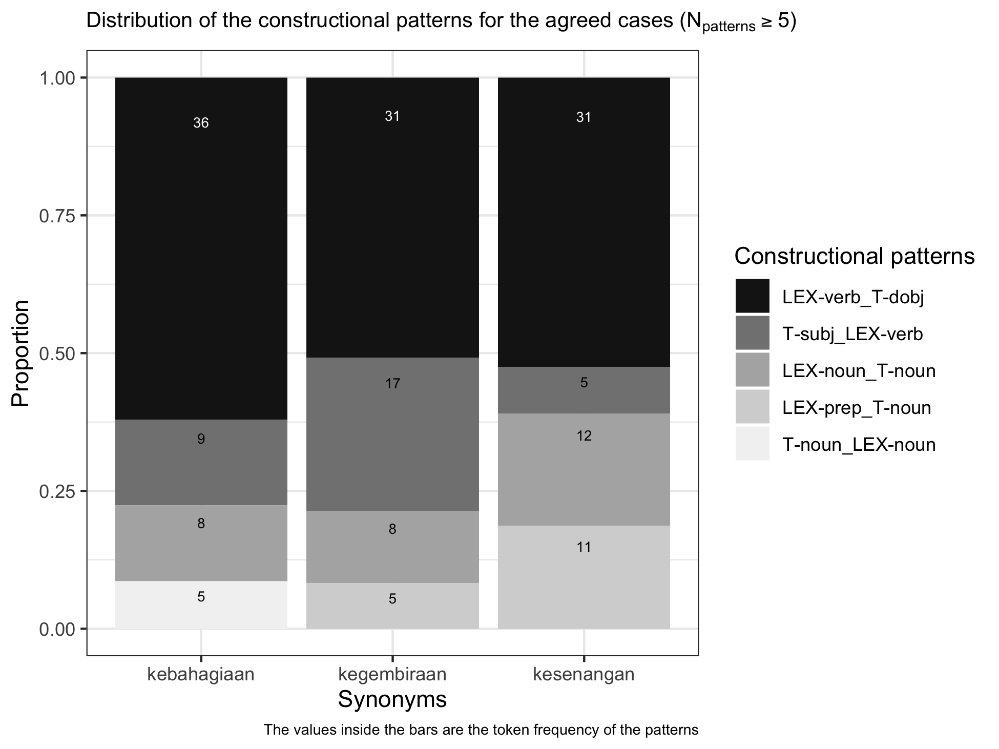

The goal of happyr is to document the R codes and the dataset for the quantitative analyses in Rajeg’s (2019) PhD thesis (submitted for examination on 27 September 2018 and passed without amendements required for the award of the degree on 1 April 2019). The study focuses on metaphors for happiness near-synonyms in Indonesian. The corpus data for the study mainly come from the Indonesian Leipzig Corpora Collection (Biemann, Heyer, Quasthoff, & Richter, 2007; Goldhahn, Eckart, & Quasthoff, 2012; Quasthoff & Goldhahn, 2013). The Leipzig Corpora are freely available for download and their use is licensed under the Creative Common License CC-BY (see the Terms of Usage page for further details).
The happyr package is based on the core packages in the tidyverse, and is built under R version 3.6.0 (2019-04-26) – “Planting of a Tree” (see the Session Info section at the bottom of the page for further details on the dependencies).
Acknowledgement
The thesis is supervised by Associate Professor Alice Gaby (main), Dr. Howard Manns (associate), and Dr. Simon Musgrave (associate). The panel members during the author’s candidature milestones consist of Dr. Anna Margetts, Dr. Réka Benczes, and Prof. John Newman. The thesis is fully funded by Monash University, Australia through the International Graduate Research Scholarships schemes (i.e. Monash International Postgraduate Research Scholarships (MIPRS, now MITS) and Monash Graduate Scholarships (MGS)). The author also benefits from generous research and travel fundings from the Monash Arts Graduate Research and the Monash Graduate Research Office.
Citing happyr
citation("happyr")
#>
#> To cite `happyr` in publication (if in 'Unified style sheet for
#> linguistics' style), please use:
#>
#> Rajeg, Gede Primahadi Wijaya. 2019. happyr: The accompanying R
#> package for Rajeg's (2019) PhD Thesis titled "Metaphorical
#> profiles and near synonyms: A corpus-based study of Indonesian
#> words for HAPPINESS". R package version 1.0.
#> doi:10.26180/5be404d6336da
#> (URL:http://doi.org/10.26180/5be404d6336da).
#> https://gederajeg.github.io/happyr/
#>
#> Please also cite the document (PhD Thesis) associated with the
#> package as follows (still if in 'Unified style sheet for
#> linguistics' style):
#>
#> Rajeg, Gede Primahadi Wijaya. 2019. Metaphorical profiles and
#> near-synonyms: A corpus-based study of Indonesian words for
#> HAPPINESS. Clayton, VIC: Monash University, Australia PhD
#> thesis. doi: 10.26180/5cac231a97fb1
#> (URL:http://doi.org/10.26180/5cac231a97fb1).
#>
#> To see these entries in BibTeX format, use 'print(<citation>,
#> bibtex=TRUE)', 'toBibtex(.)', or set
#> 'options(citation.bibtex.max=999)'.Examples
First, load happyr and tidyverse packages in R.
# load the required packages
library(happyr)
library(tidyverse)
#> ── Attaching packages ───────────────────────────────────────── tidyverse 1.3.0 ──
#> ✔ ggplot2 3.2.1 ✔ purrr 0.3.3
#> ✔ tibble 2.1.3 ✔ dplyr 0.8.3
#> ✔ tidyr 1.0.0 ✔ stringr 1.4.0
#> ✔ readr 1.3.1 ✔ forcats 0.4.0
#> ── Conflicts ──────────────────────────────────────────── tidyverse_conflicts() ──
#> ✖ dplyr::filter() masks stats::filter()
#> ✖ dplyr::lag() masks stats::lag()Chapter 3 - Interrater-agreement computation
All codes for the Kappa’s calculation in the interrater agreement trial are presented in the Examples section of the documentation of the kappa_tidy() function. Type ?kappa_tidy() in the R console to see them or check the online documentation.
The ggplot2 codes for generating Figure 3.1 in Rajeg (2019, Ch. 3) is wrapped into a function called plot_cxn_interrater(). The input data frame is top_cxn_data.
# prepare plot title and caption
plot_title <- expression(paste("Distribution of the constructional patterns for the agreed cases (", N["patterns"] >= "5)", sep = ""))
plot_caption <- "The values inside the bars are the token frequency of the patterns"
plot_cxn_interrater(df = top_cxn_data) +
# add plot title and caption
labs(title = plot_title,
caption = plot_caption) +
# adjust the size of the plot title and caption
theme(plot.title = element_text(size = 10),
plot.caption = element_text(size = 7))
Chapter 5 and Chapter 6 - Token frequency, type frequency, and type/token ratio analyses
The main metaphor data for Chapter 5, 6, and 7 is stored as a tibble in phd_data_metaphor. The relevant function for the token, type, and type/token ratio analyses in Chapter 5 and 6 is ttr().
# calculation for the token, type, and type/token ratio
ttr_metaphor <- ttr(df = phd_data_metaphor,
schema_var = "metaphors", # specify col.name of the metaphor variable
lexunit_var = "lu", # specify col.name of the lexical unit variable
float_digits = 2)The following code retrieves the top-10 metaphors sorted according to their token frequencies (Rajeg, 2019, Ch. 5, Table 5-1). A function for rendering the metaphors strings as small-capital in the MS Word output is available in the package as scaps(); keyboard shortcut to produce the so-called “pipe” %>% in the code-chunk below is Ctrl + Shift + M (on Windows) or Cmd + Shift + M (on macOS).
top_n(x = ttr_metaphor, n = 10L, wt = token) %>%
mutate(metaphors = scaps(metaphors)) %>% # render the metaphors into small capitals to be printed in MS Word output
knitr::kable(caption = "Top-10 most frequent metaphors", row.names = TRUE)| metaphors | token | type_lu | perc_token | perc_type_lu | type_per_token_lu | |
|---|---|---|---|---|---|---|
| 1 | happiness is a possessable object | 749 | 63 | 20.59 | 7.84 | 8.41 |
| 2 | happiness is a contained entity | 358 | 26 | 9.84 | 3.23 | 7.26 |
| 3 | happiness is a desired goal | 293 | 42 | 8.05 | 5.22 | 14.33 |
| 4 | happiness is an (un)veiled object | 211 | 23 | 5.80 | 2.86 | 10.90 |
| 5 | happiness is a located object | 210 | 26 | 5.77 | 3.23 | 12.38 |
| 6 | happiness is a location | 169 | 35 | 4.65 | 4.35 | 20.71 |
| 7 | happiness is a liquid in a container | 156 | 37 | 4.29 | 4.60 | 23.72 |
| 8 | intensity of happiness is quantity of object | 137 | 29 | 3.77 | 3.61 | 21.17 |
| 9 | happiness is food | 108 | 17 | 2.97 | 2.11 | 15.74 |
| 10 | happiness is a submerged entity | 99 | 12 | 2.72 | 1.49 | 12.12 |
Top-10 most frequent metaphors
The column token shows the token frequency of a metaphor meanwhile the column type_lu represents the number of different lexical-unit types evoking the source domain frames of the metaphor in the metaphorical expressions. The original values of the type_per_token_lu are normalised into the number of type per 100 tokens (cf. Oster, 2018, pp. 206–207). Thus, the closer the TTR of a metaphor to 100, the higher the rate of different lexical-unit type per 100 tokens of the metaphor (see further below) (Oster, 2010, pp. 748–749, 2018, p. 206; Stefanowitsch, 2017, p. 282; Stefanowitsch & Flach, 2016, pp. 118–120).
Use get_lu_table() to retrieve the source frame lexical units in the metaphorical expressions instantiating a given metaphor. It is illustrated here with the linguistic expressions for happiness is a desired goal metaphor (Rajeg, 2019, Ch. 5, Table 5-3):
# print the top-10 Lexical Units of the HAPPINESS IS A DESIRED GOAL metaphor
get_lu_table(metaphor = "is a desired goal$",
top_n_only = TRUE,
top_n_limit = 10L,
df = phd_data_metaphor) %>%
knitr::kable(caption = paste("Top-10 most frequent lexical units for ",
scaps("happiness is a desired goal."), sep = ""),
row.names = TRUE)| Lexical_units | Gloss | N | Perc_overall | |
|---|---|---|---|---|
| 1 | cari | to search/look for | 74 | 25.26 |
| 2 | capai | to reach | 51 | 17.41 |
| 3 | raih | to pull/reach sth. towards the body | 27 | 9.22 |
| 4 | kejar | to chase | 24 | 8.19 |
| 5 | temukan | to find | 24 | 8.19 |
| 6 | tujuan | destination/goal | 13 | 4.44 |
| 7 | menuju | to head to | 9 | 3.07 |
| 8 | jalan | way | 8 | 2.73 |
| 9 | kunci | key | 8 | 2.73 |
| 10 | gapai | to reach out | 6 | 2.05 |
Top-10 most frequent lexical units for happiness is a desired goal.
The column Perc_overall indicates the percentage of a given LU from the total tokens of the happiness is a desired goal metaphor. More linguistic citations for the metaphorical expressions are presented in the thesis.
From the output of ttr() above, which is stored in the ttr_metaphor table, we can retrieve the top-10 metaphors with high type frequencies with the following codes (Rajeg, 2019, Ch. 6, Table 6-1); the type frequency of a metaphor indicates the number of different lexical unit types expressing a given metaphor.
# sort by type frequency
productive_metaphor <-
ttr_metaphor %>%
arrange(desc(type_lu)) %>% # sort in descending order for the type frequency
top_n(10, type_lu) %>% # get the top-10 rows
mutate(metaphors = scaps(metaphors)) # small-caps the metaphors texts
# print as table
productive_metaphor %>%
select(Metaphors = metaphors,
Token = token,
`%Token` = perc_token,
Type = type_lu,
`%Type` = perc_type_lu) %>%
knitr::kable(caption = 'Top-10 metaphors sorted on their type frequency.', row.names = TRUE)| Metaphors | Token | %Token | Type | %Type | |
|---|---|---|---|---|---|
| 1 | happiness is a possessable object | 749 | 20.59 | 63 | 7.84 |
| 2 | happiness is a desired goal | 293 | 8.05 | 42 | 5.22 |
| 3 | happiness is a liquid in a container | 156 | 4.29 | 37 | 4.60 |
| 4 | happiness is a location | 169 | 4.65 | 35 | 4.35 |
| 5 | intensity of happiness is quantity of object | 137 | 3.77 | 29 | 3.61 |
| 6 | happiness is light | 43 | 1.18 | 27 | 3.36 |
| 7 | happiness is a contained entity | 358 | 9.84 | 26 | 3.23 |
| 8 | happiness is a located object | 210 | 5.77 | 26 | 3.23 |
| 9 | happiness is an (un)veiled object | 211 | 5.80 | 23 | 2.86 |
| 10 | happiness is an imperilled entity | 32 | 0.88 | 21 | 2.61 |
Top-10 metaphors sorted on their type frequency.
The codes below generates Table 6-2 (Rajeg, 2019, Ch. 6) that ranks metaphors with high type frequency above according to their type/token ratio.
productive_metaphor %>%
arrange(desc(type_per_token_lu)) %>%
select(Metaphors = metaphors,
Token = token,
Type = type_lu,
`Type/token ratio` = type_per_token_lu) %>%
knitr::kable(caption = 'Metaphors with high type frequency sorted by their Type/Token Ratio (TTR).', row.names = TRUE)| Metaphors | Token | Type | Type/token ratio | |
|---|---|---|---|---|
| 1 | happiness is an imperilled entity | 32 | 21 | 65.62 |
| 2 | happiness is light | 43 | 27 | 62.79 |
| 3 | happiness is a liquid in a container | 156 | 37 | 23.72 |
| 4 | intensity of happiness is quantity of object | 137 | 29 | 21.17 |
| 5 | happiness is a location | 169 | 35 | 20.71 |
| 6 | happiness is a desired goal | 293 | 42 | 14.33 |
| 7 | happiness is a located object | 210 | 26 | 12.38 |
| 8 | happiness is an (un)veiled object | 211 | 23 | 10.90 |
| 9 | happiness is a possessable object | 749 | 63 | 8.41 |
| 10 | happiness is a contained entity | 358 | 26 | 7.26 |
Metaphors with high type frequency sorted by their Type/Token Ratio (TTR).
It is clear that the first two metaphors in the table above (i.e. happiness is an imperilled entity and happiness is light) have higher ratio for different types of linguistic instantiations per 100 tokens, despite the vast difference in their token frequencies compared to the remanining metaphors with high token frequencies in the table. This suggests that these two metaphors are expressed with relatively wider range of expressions with respect to their token frequencies, compared to the frequent metaphors.
Next, a helper function called get_creative_metaphors() is available to retrieve the top-10 creative metaphors (Rajeg, 2019, Ch. 6, Table 6-5). I filter and discuss the metaphors with high type/token ratio and occurring at least three tokens in the sample, as shown in the codes below
min_freq <- 3L
table_caption <- paste('Top-10 creative metaphors sorted based on the TTR value and occurring at least ', happyr::numbers2words(min_freq), ' tokens.', sep = "")
creative_metahors <-
ttr_metaphor %>%
get_creative_metaphors(min_token = min_freq,
top_n_limit = 10L) %>%
mutate(metaphors = scaps(metaphors))
# print the table
creative_metahors %>%
select(Metaphors = metaphors,
Token = token,
Type = type_lu,
`Type/token ratio` = type_per_token_lu) %>%
knitr::kable(caption = table_caption, row.names = TRUE)| Metaphors | Token | Type | Type/token ratio | |
|---|---|---|---|---|
| 1 | happiness is a harmful agent | 11 | 11 | 100.00 |
| 2 | happiness is drugs | 6 | 6 | 100.00 |
| 3 | happiness is a moved entity | 4 | 4 | 100.00 |
| 4 | happiness is a treatment tool | 3 | 3 | 100.00 |
| 5 | happiness is an accompanied object | 3 | 3 | 100.00 |
| 6 | happiness is being soaked | 9 | 8 | 88.89 |
| 7 | happiness is a resource | 8 | 7 | 87.50 |
| 8 | happiness is impediment to motion | 6 | 5 | 83.33 |
| 9 | happiness is a deceiver | 20 | 16 | 80.00 |
| 10 | happiness is an adversary | 24 | 19 | 79.17 |
Top-10 creative metaphors sorted based on the TTR value and occurring at least three tokens.
One way to interpret the values in the Type/token ratio (TTR) column is to conceive them as representing the number of unique lexical-unit types per 100 tokens of a metaphor. The higher the ratio, the more creative a given metaphor is linguistically expressed. For instance, the TTR value of happiness is an adversary (i.e. 79.17) indicates that there are about 79.17 unique types per 100 tokens of the happiness is an adversary, which is much higher than the TTR value of happiness is a possessable object (i.e. 8.41). The TTR value of a metaphor is used to represent the creativity ratio of a metaphor in its linguistic manifestation ( cf. Oster, 2018, p. 206, 2010, pp. 748–749).
Retrieving the frequency of submappings and semantic source frames of the metaphors
The data for retrieving the information on the submappings and the source frames of metaphors is contained within phd_data_metaphor. Among the relevant functions for retrieving these information are get_submappings() and get_frames(). The illustration is based on data for the happiness is liquid in a container metaphor.
# get the submappings for the liquid in a container
get_submappings(metaphor = "liquid in a container",
df = phd_data_metaphor) %>%
mutate(submappings = scaps(submappings)) %>%
knitr::kable(caption = paste("Submappings for ", scaps("happiness is liquid in a container."), sep = ""), row.names = TRUE)| submappings | n | type | perc | type_perc | |
|---|---|---|---|---|---|
| 1 | expression of happiness is released liquid | 100 | 18 | 64.10 | 48.65 |
| 2 | intensified happiness is heated liquid | 32 | 4 | 20.51 | 10.81 |
| 3 | high intensity of happiness is fullness of liquid in a container | 11 | 6 | 7.05 | 16.22 |
| 4 | preventing happiness is impeding flowing substance | 5 | 2 | 3.21 | 5.41 |
| 5 | happiness is a fluidic motion | 4 | 4 | 2.56 | 10.81 |
| 6 | happiness is a liquid in a container | 4 | 3 | 2.56 | 8.11 |
Submappings for happiness is liquid in a container.
Column n shows the ‘token frequency’ of the submappings (with perc indicates the token’s percentage). Meanwhile type shows the ‘type frequency’ of the submappings (i.e., the number of different lexical unit types evoking the corresponding submappings of a given metaphor).
Use get_frames() to retrieve frequency profiles of the source frames for a given metaphor:
# get the source frames evoked by the metaphorical expressions for the liquid in a container
get_frames(metaphor = "liquid in a container",
df = phd_data_metaphor) %>%
mutate(frames = scaps(frames)) %>%
knitr::kable(caption = paste("Source frames for ", scaps("happiness is liquid in a container."), sep = ""), row.names = TRUE)| frames | n | type | perc | type_perc | |
|---|---|---|---|---|---|
| 1 | release liquid | 100 | 18 | 64.10 | 48.65 |
| 2 | heating fluid | 32 | 4 | 20.51 | 10.81 |
| 3 | fluid containment | 15 | 9 | 9.62 | 24.32 |
| 4 | stop flow of substance | 5 | 2 | 3.21 | 5.41 |
| 5 | fluid motion | 4 | 4 | 2.56 | 10.81 |
Source frames for happiness is liquid in a container.
Based on the same data, it is also possible to retrieve a frequency table for the lexical units and the submappings they evoke for a given metaphor. Use get_lu_submappings_table() for this purpose.
get_lu_submappings_table(metaphor = "liquid in a container",
df = phd_data_metaphor) %>%
mutate(submappings = scaps(submappings), # small-cap the submapping
lu = paste("*", lu, "*", sep = "")) %>% # italicised the printed lexical units
knitr::kable(caption = paste("Evoked submappings for the lexical units of the ",
scaps("happiness is liquid in a container"), " metaphor.", sep = ""),
row.names = TRUE)| submappings | lu | lu_gloss | n | perc_expr_overall | perc_expr_by_submappings | |
|---|---|---|---|---|---|---|
| 1 | expression of happiness is released liquid | terpancar | to be spurted out | 43 | 27.56 | 43.00 |
| 2 | expression of happiness is released liquid | luapan | overflow | 25 | 16.03 | 25.00 |
| 3 | expression of happiness is released liquid | pancarkan | to spurt sth. | 9 | 5.77 | 9.00 |
| 4 | expression of happiness is released liquid | salurkan | to funnel sth. | 4 | 2.56 | 4.00 |
| 5 | expression of happiness is released liquid | pancaran | a spurting-out | 3 | 1.92 | 3.00 |
| 6 | expression of happiness is released liquid | curahan | outpouring | 2 | 1.28 | 2.00 |
| 7 | expression of happiness is released liquid | tertuang | to be poured out | 2 | 1.28 | 2.00 |
| 8 | expression of happiness is released liquid | tuangkan | to pour out sth. | 2 | 1.28 | 2.00 |
| 9 | expression of happiness is released liquid | air bah | flood | 1 | 0.64 | 1.00 |
| 10 | expression of happiness is released liquid | alirkan | to flow and drain sth. | 1 | 0.64 | 1.00 |
| 11 | expression of happiness is released liquid | lampiaskan | to gush sth. out | 1 | 0.64 | 1.00 |
| 12 | expression of happiness is released liquid | memancar | to spurt | 1 | 0.64 | 1.00 |
| 13 | expression of happiness is released liquid | membual | to overflow/spurt out | 1 | 0.64 | 1.00 |
| 14 | expression of happiness is released liquid | pelampiasan | to spurt out sth. | 1 | 0.64 | 1.00 |
| 15 | expression of happiness is released liquid | tercurah | to be poured out | 1 | 0.64 | 1.00 |
| 16 | expression of happiness is released liquid | teteskan | to drip sth. | 1 | 0.64 | 1.00 |
| 17 | expression of happiness is released liquid | titikkan | to drip sth. | 1 | 0.64 | 1.00 |
| 18 | expression of happiness is released liquid | tumpahkan | to spill sth. | 1 | 0.64 | 1.00 |
| 19 | happiness is a fluidic motion | mengalir | to flow | 1 | 0.64 | 25.00 |
| 20 | happiness is a fluidic motion | resap.v | to seep into sth. | 1 | 0.64 | 25.00 |
| 21 | happiness is a fluidic motion | terlarut | to be washed-and-drawn away | 1 | 0.64 | 25.00 |
| 22 | happiness is a fluidic motion | terserap | to be soaked up/absorbed | 1 | 0.64 | 25.00 |
| 23 | happiness is a liquid in a container | tampung | to collect-in (of liquid) | 2 | 1.28 | 50.00 |
| 24 | happiness is a liquid in a container | dicarikan jalan keluar | to be searched for a way out | 1 | 0.64 | 25.00 |
| 25 | happiness is a liquid in a container | mendarah daging | to be internalised | 1 | 0.64 | 25.00 |
| 26 | high intensity of happiness is fullness of liquid in a container | limpahkan | to brim liquid onto sth. | 4 | 2.56 | 36.36 |
| 27 | high intensity of happiness is fullness of liquid in a container | berlimpah | to be brimming/aboundant | 2 | 1.28 | 18.18 |
| 28 | high intensity of happiness is fullness of liquid in a container | limpahi | to brim sth. with liquid | 2 | 1.28 | 18.18 |
| 29 | high intensity of happiness is fullness of liquid in a container | aliri | to overflow sth. with liquid | 1 | 0.64 | 9.09 |
| 30 | high intensity of happiness is fullness of liquid in a container | kelimpahan | the brimming of sth. | 1 | 0.64 | 9.09 |
| 31 | high intensity of happiness is fullness of liquid in a container | limpahan | the brimming of sth. | 1 | 0.64 | 9.09 |
| 32 | intensified happiness is heated liquid | luapkan | to boil sth. over | 21 | 13.46 | 65.62 |
| 33 | intensified happiness is heated liquid | meluap(-luap) | to boil over | 8 | 5.13 | 25.00 |
| 34 | intensified happiness is heated liquid | meruap | to boil to froth/bubble | 2 | 1.28 | 6.25 |
| 35 | intensified happiness is heated liquid | membludak | to boil over to overflow | 1 | 0.64 | 3.12 |
| 36 | preventing happiness is impeding flowing substance | bendung | to dam up sth. | 3 | 1.92 | 60.00 |
| 37 | preventing happiness is impeding flowing substance | sumbat | to clog sth. | 2 | 1.28 | 40.00 |
Evoked submappings for the lexical units of the happiness is liquid in a container metaphor.
The column perc_expr_overall indicates the percentages of the token frequencies of the lexical units for the given metaphor. Meanwhile perc_expr_by_submappings indicates the percentages of the lexical units for each submapping of the given metaphor.
Visualising the frequency of occurrences for the body-part terms in the metaphorical expressions
The function for generating Figure 5.1 in Chapter 5 is plot_body_part() with phd_data_metaphor as the only input argument:

The barplot shows the distribution of the body-part terms that are explicitly mentioned in metaphorical expressions about happiness in the sample.
The following codes are used to generate Table 5-12 in Chapter 5 for the top-10 most frequent co-occurrence of body-part terms and the metaphors:
# body-part gloss
bp_gloss <- tibble(gloss = c('chest/bosom', 'self', 'liver', 'eyes', 'face', 'body', 'face', 'face', 'deepest part of the heart', 'lips', 'mouth', 'body; bodily'),
body_part_terms = c('dada', 'diri', 'hati', 'mata', 'muka', 'tubuh', 'wajah', 'paras', 'lubuk kalbu', 'bibir', 'mulut', 'jasmani'))
# generate the table
phd_data_metaphor %>%
filter(body_part_inclusion %in% c('y')) %>%
count(body_part_terms, metaphors) %>%
arrange(desc(n)) %>%
left_join(bp_gloss, by = 'body_part_terms') %>% # join the glossing tibble
select(metaphors, body_part_terms, gloss, n) %>%
mutate(metaphors = scaps(metaphors),
body_part_terms = paste("*", body_part_terms, "* '", gloss, "'", sep = "")) %>%
select(Body_parts = body_part_terms, Metaphors = metaphors, N = n) %>%
top_n(10, N) %>%
knitr::kable(caption = 'The ten most frequent <span style="font-variant:small-caps;">Body-part</span>`*`<span style="font-variant:small-caps;">Metaphors</span> co-occurrence for <span style="font-variant:small-caps;">Happiness</span> in Indonesian.', row.names = TRUE)| Body_parts | Metaphors | N | |
|---|---|---|---|
| 1 | wajah ‘face’ | happiness is an (un)veiled object | 45 |
| 2 | wajah ‘face’ | happiness is a liquid in a container | 27 |
| 3 | hati ‘liver’ | happiness is a contained entity | 17 |
| 4 | wajah ‘face’ | happiness is a contained entity | 12 |
| 5 | wajah ‘face’ | happiness is a located object | 8 |
| 6 | wajah ‘face’ | happiness is an embellishment | 8 |
| 7 | wajah ‘face’ | happiness is light | 8 |
| 8 | dada ‘chest/bosom’ | happiness is a contained entity | 7 |
| 9 | mata ‘eyes’ | happiness is a liquid in a container | 7 |
| 10 | wajah ‘face’ | happiness is a drawing | 7 |
The ten most frequent Body-part*Metaphors co-occurrence for Happiness in Indonesian.
Chapter 7 - Distinctive metaphors and collocates for happiness near-synonyms in Indonesian
The distinctiveness of a given metaphor and collocate with each happiness synonym is measured using one-tailed, Binomial Test implemented in the Multiple Distinctive Collexeme Analysis (MDCA) (cf., e.g., Hilpert, 2006; Stefanowitsch, 2013, pp. 299–300). The function to perform MDCA is mdca().
# MDCA for metaphor * synonyms
mdca_res <- mdca(df = phd_data_metaphor,
cxn_var = "synonyms", # `cxn_var` = constructions column
coll_var = "metaphors") # `coll_var` = collexeme/collocates columnThe input data frame for performing MDCA for the distinctive collocates are available as colloc_input_data. The English gloss/translation for the distinctive collocates are stored in dist_colloc_gloss.
# mdca for window-span collocational data
mdca_colloc <- mdca(df = colloc_input_data,
cxn_var = "synonyms",
coll_var = "collocates")The package also provides two related functions to retrieve the attracted/distinctive and the repelled items from the results of MDCA. They are mdca_attr() and mdca_repel(). The following example shows how to get the distinctive metaphors for kesenangan ‘pleasure; happiness’ having the association strength of equal to, or greater than, two (i.e. pbinomial < 0.01) (Rajeg, 2019, Ch. 7, Table 7-5):
mdca_res %>%
mdca_attr(filter_by = "cxn",
cxn_type = "kesenangan",
min_assocstr = 2) %>%
mutate(exp = round(exp, 3L), # round the expected co-occurrence frequency
metaphors = scaps(metaphors)) %>%
select(-synonyms) %>%
as.data.frame() %>%
knitr::kable(caption = "Distinctive metaphors for *kesenangan* 'pleasure'", row.names = TRUE)| metaphors | n | exp | assocstr | p_binomial | p_holm | dec | |
|---|---|---|---|---|---|---|---|
| 1 | happiness is a desired goal | 110 | 51.625 | 15.265 | 5.430e-16 | 3.351e-13 | *** |
| 2 | happiness is a deceiver | 17 | 3.524 | 9.998 | 1.004e-10 | 6.166e-08 | *** |
| 3 | happiness is food | 44 | 19.029 | 7.815 | 1.532e-08 | 9.345e-06 | *** |
| 4 | happiness is a subjugator | 13 | 3.172 | 6.256 | 5.543e-07 | 3.359e-04 | *** |
| 5 | happiness is a possessable object | 183 | 131.971 | 5.776 | 1.673e-06 | 1.009e-03 | ** |
| 6 | happiness is a foundation (of an action) | 8 | 1.938 | 4.036 | 9.206e-05 | 5.469e-02 | ms |
| 7 | happiness is an adversary | 12 | 4.229 | 3.534 | 2.923e-04 | 1.710e-01 | ns |
| 8 | happiness is impediment to motion | 5 | 1.057 | 3.061 | 8.693e-04 | 5.033e-01 | ns |
| 9 | happiness is a resource | 5 | 1.410 | 2.228 | 5.921e-03 | 1.000e+00 | ns |
Distinctive metaphors for kesenangan ‘pleasure’
The p_holm column provides the Holm’s corrected significance level (Gries, 2009, pp. 249, 251) of the Binomial Test p-value (p_binomial). The Binomial p-value is used as the basis for the association strength value (assocstr) ( cf. Stefanowitsch, 2013, p. 305), which is derived via the log-transformed pBinomial-value to the base of 10. The dec column indicates the significane of the association between the metaphor and kesenangan ‘pleasure’ at the corrected level. Column exp shows the ‘expected’ co-occurrence frequency of the metaphor with kesenangan while n is the ‘observed’ co-occurrence frequency in the sample.
The following code shows the use of mdca_repel() for retrieving metaphors strongly dissociated with kesenangan ‘pleasure’ (Rajeg, 2019, Ch. 7, Table 7-6):
mdca_res %>%
mdca_repel(filter_by = "cxn",
cxn_type = "kesenangan",
min_assocstr = -2) %>%
mutate(exp = round(exp, 3L),
metaphors = scaps(metaphors)) %>%
select(-synonyms) %>%
knitr::kable(caption = "Repelled metaphors for *kesenangan* 'pleasure'", row.names = TRUE)| metaphors | n | exp | assocstr | p_binomial | p_holm | dec | |
|---|---|---|---|---|---|---|---|
| 1 | happiness is a contained entity | 16 | 63.078 | -13.354 | 4.429e-14 | 2.728e-11 | *** |
| 2 | happiness is an (un)veiled object | 8 | 37.177 | -9.104 | 7.870e-10 | 4.817e-07 | *** |
| 3 | happiness is a liquid in a container | 6 | 27.487 | -6.806 | 1.565e-07 | 9.514e-05 | *** |
| 4 | happiness is a colour | 0 | 9.338 | -4.461 | 3.457e-05 | 2.067e-02 | * |
| 5 | happiness is a located object | 19 | 37.001 | -3.477 | 3.335e-04 | 1.947e-01 | ns |
| 6 | happiness is a sign | 1 | 8.810 | -3.141 | 7.230e-04 | 4.194e-01 | ns |
| 7 | happiness is light | 1 | 7.576 | -2.611 | 2.449e-03 | 1.000e+00 | ns |
| 8 | happiness is a drawing | 1 | 7.224 | -2.461 | 3.457e-03 | 1.000e+00 | ns |
| 9 | happiness is (un)mixed substance | 3 | 9.867 | -2.164 | 6.854e-03 | 1.000e+00 | ns |
Repelled metaphors for kesenangan ‘pleasure’
Finally, the codes below show how to retrieve the top-20 most distinctive collocates co-occurring with kesenangan ‘pleasure’ within the span of 4 words to the left and right of kesenangan (Rajeg, 2019, Ch. 7, Table 7-7).
# present the result table for collocational analysis of *kesenangan*
mdca_attr(mdca_colloc,
cxn_type = '^kesenangan') %>%
top_n(20, assocstr) %>%
left_join(dist_colloc_gloss,
by = "collocates") %>% # left-join the gloss for the distinctive collocates
select(-synonyms) %>%
select(collocates, gloss, everything()) %>%
mutate(exp = round(exp, 3),
collocates = paste("*", collocates, "*", sep = "")) %>%
knitr::kable(caption="The 20 most distinctive, 4-window span collocates for *kesenangan* 'pleasure' in the whole Indonesian Leipzig Corpora collection.", row.names = TRUE)| collocates | gloss | n | exp | assocstr | p_binomial | p_holm | dec | |
|---|---|---|---|---|---|---|---|---|
| 1 | duniawi | worldly; earthly | 52 | 10.298 | 28.818 | 1.520e-29 | 1.108e-24 | *** |
| 2 | pribadi | personal | 30 | 5.994 | 16.702 | 1.985e-17 | 1.446e-12 | *** |
| 3 | mencari | to search; to look for | 55 | 17.522 | 15.757 | 1.748e-16 | 1.274e-11 | *** |
| 4 | kenikmatan | pleasure; enjoyment | 37 | 11.835 | 10.789 | 1.624e-11 | 1.184e-06 | *** |
| 5 | hobi | hobby | 14 | 2.306 | 10.278 | 5.277e-11 | 3.845e-06 | *** |
| 6 | nafsu | lust | 19 | 3.996 | 10.114 | 7.689e-11 | 5.603e-06 | *** |
| 7 | semata | simply; merely | 14 | 2.613 | 8.756 | 1.756e-09 | 1.279e-04 | *** |
| 8 | keuntungan | profit | 12 | 2.152 | 7.934 | 1.165e-08 | 8.488e-04 | *** |
| 9 | kepentingan | interest; concern | 13 | 2.613 | 7.464 | 3.438e-08 | 2.504e-03 | ** |
| 10 | seksual | sexual | 10 | 1.691 | 7.157 | 6.964e-08 | 5.072e-03 | ** |
| 11 | menikmati | to taste; to relish | 42 | 18.291 | 7.136 | 7.312e-08 | 5.326e-03 | ** |
| 12 | menunda | to delay; to postpone | 8 | 1.230 | 6.507 | 3.115e-07 | 2.268e-02 | * |
| 13 | kebutuhan | needs | 10 | 1.998 | 5.873 | 1.341e-06 | 9.762e-02 | ms |
| 14 | mengejar | to chase; to run after | 17 | 5.072 | 5.844 | 1.431e-06 | 1.042e-01 | ns |
| 15 | prinsip | principle | 8 | 1.383 | 5.616 | 2.421e-06 | 1.762e-01 | ns |
| 16 | mendapat | to get; to receive | 22 | 7.993 | 5.521 | 3.016e-06 | 2.196e-01 | ns |
| 17 | berdasarkan | to be founded/based on | 10 | 2.152 | 5.394 | 4.040e-06 | 2.941e-01 | ns |
| 18 | hawa | air | 9 | 1.844 | 5.171 | 6.744e-06 | 4.908e-01 | ns |
| 19 | waktu | time | 18 | 6.302 | 4.896 | 1.270e-05 | 9.242e-01 | ns |
| 20 | dosa | sin | 6 | 0.922 | 4.880 | 1.319e-05 | 9.594e-01 | ns |
The 20 most distinctive, 4-window span collocates for kesenangan ‘pleasure’ in the whole Indonesian Leipzig Corpora collection.
It appears that kesenangan ‘pleasure’ is strongly associated with negative nuance as it more frequently co-occurs with words, such as dosa ‘sin’, hawa nafsu ‘lust’, nafsu ‘lust’, seksual ‘sexual’, and duniawi ‘worldly; earthly’.
Session info
devtools::session_info()
#> ─ Session info ──────────────────────────────────────────────────────────
#> setting value
#> version R version 3.6.0 (2019-04-26)
#> os macOS 10.15.1
#> system x86_64, darwin15.6.0
#> ui X11
#> language (EN)
#> collate en_US.UTF-8
#> ctype en_US.UTF-8
#> tz Asia/Makassar
#> date 2019-12-02
#>
#> ─ Packages ──────────────────────────────────────────────────────────────
#> package * version date lib source
#> assertthat 0.2.1 2019-03-21 [1] CRAN (R 3.6.0)
#> backports 1.1.4 2019-04-10 [1] CRAN (R 3.6.0)
#> broom 0.5.2 2019-04-07 [1] CRAN (R 3.6.0)
#> callr 3.2.0 2019-03-15 [1] CRAN (R 3.6.0)
#> cellranger 1.1.0 2016-07-27 [1] CRAN (R 3.6.0)
#> cli 1.1.0 2019-03-19 [1] CRAN (R 3.6.0)
#> colorspace 1.4-1 2019-03-18 [1] CRAN (R 3.6.0)
#> crayon 1.3.4 2017-09-16 [1] CRAN (R 3.6.0)
#> DBI 1.0.0 2018-05-02 [1] CRAN (R 3.6.0)
#> dbplyr 1.4.2 2019-06-17 [1] CRAN (R 3.6.0)
#> desc 1.2.0 2018-05-01 [1] CRAN (R 3.6.0)
#> devtools 2.0.2 2019-04-08 [1] CRAN (R 3.6.0)
#> digest 0.6.19 2019-05-20 [1] CRAN (R 3.6.0)
#> dplyr * 0.8.3 2019-07-04 [1] CRAN (R 3.6.0)
#> ellipsis 0.3.0 2019-09-20 [1] CRAN (R 3.6.0)
#> evaluate 0.14 2019-05-28 [1] CRAN (R 3.6.0)
#> forcats * 0.4.0 2019-02-17 [1] CRAN (R 3.6.0)
#> fs 1.3.1 2019-05-06 [1] CRAN (R 3.6.0)
#> generics 0.0.2 2018-11-29 [1] CRAN (R 3.6.0)
#> ggplot2 * 3.2.1 2019-08-10 [1] CRAN (R 3.6.0)
#> glue 1.3.1 2019-03-12 [1] CRAN (R 3.6.0)
#> gtable 0.3.0 2019-03-25 [1] CRAN (R 3.6.0)
#> happyr * 1.0 2019-12-02 [1] local
#> haven 2.2.0 2019-11-08 [1] CRAN (R 3.6.0)
#> highr 0.8 2019-03-20 [1] CRAN (R 3.6.0)
#> hms 0.5.2 2019-10-30 [1] CRAN (R 3.6.0)
#> htmltools 0.3.6 2017-04-28 [1] CRAN (R 3.6.0)
#> httr 1.4.1 2019-08-05 [1] CRAN (R 3.6.0)
#> irr 0.84.1 2019-01-26 [1] CRAN (R 3.6.0)
#> jsonlite 1.6 2018-12-07 [1] CRAN (R 3.6.0)
#> knitr 1.23 2019-05-18 [1] CRAN (R 3.6.0)
#> labeling 0.3 2014-08-23 [1] CRAN (R 3.6.0)
#> lattice 0.20-38 2018-11-04 [2] CRAN (R 3.6.0)
#> lazyeval 0.2.2 2019-03-15 [1] CRAN (R 3.6.0)
#> lifecycle 0.1.0 2019-08-01 [1] CRAN (R 3.6.0)
#> lpSolve 5.6.13.1 2019-05-28 [1] CRAN (R 3.6.0)
#> lubridate 1.7.4 2018-04-11 [1] CRAN (R 3.6.0)
#> magrittr 1.5 2014-11-22 [1] CRAN (R 3.6.0)
#> memoise 1.1.0 2017-04-21 [1] CRAN (R 3.6.0)
#> modelr 0.1.5 2019-08-08 [1] CRAN (R 3.6.0)
#> munsell 0.5.0 2018-06-12 [1] CRAN (R 3.6.0)
#> nlme 3.1-139 2019-04-09 [2] CRAN (R 3.6.0)
#> pillar 1.4.2 2019-06-29 [1] CRAN (R 3.6.0)
#> pkgbuild 1.0.3 2019-03-20 [1] CRAN (R 3.6.0)
#> pkgconfig 2.0.2 2018-08-16 [1] CRAN (R 3.6.0)
#> pkgload 1.0.2 2018-10-29 [1] CRAN (R 3.6.0)
#> prettyunits 1.0.2 2015-07-13 [1] CRAN (R 3.6.0)
#> processx 3.3.1 2019-05-08 [1] CRAN (R 3.6.0)
#> ps 1.3.0 2018-12-21 [1] CRAN (R 3.6.0)
#> purrr * 0.3.3 2019-10-18 [1] CRAN (R 3.6.0)
#> R6 2.4.0 2019-02-14 [1] CRAN (R 3.6.0)
#> Rcpp 1.0.1 2019-03-17 [1] CRAN (R 3.6.0)
#> readr * 1.3.1 2018-12-21 [1] CRAN (R 3.6.0)
#> readxl 1.3.1 2019-03-13 [1] CRAN (R 3.6.0)
#> remotes 2.0.4 2019-04-10 [1] CRAN (R 3.6.0)
#> reprex 0.3.0 2019-05-16 [1] CRAN (R 3.6.0)
#> rlang 0.4.2 2019-11-23 [1] CRAN (R 3.6.0)
#> rmarkdown 1.13 2019-05-22 [1] CRAN (R 3.6.0)
#> rprojroot 1.3-2 2018-01-03 [1] CRAN (R 3.6.0)
#> rstudioapi 0.10 2019-03-19 [1] CRAN (R 3.6.0)
#> rvest 0.3.5 2019-11-08 [1] CRAN (R 3.6.0)
#> scales 1.0.0 2018-08-09 [1] CRAN (R 3.6.0)
#> sessioninfo 1.1.1 2018-11-05 [1] CRAN (R 3.6.0)
#> stringi 1.4.3 2019-03-12 [1] CRAN (R 3.6.0)
#> stringr * 1.4.0 2019-02-10 [1] CRAN (R 3.6.0)
#> testthat 2.1.1 2019-04-23 [1] CRAN (R 3.6.0)
#> tibble * 2.1.3 2019-06-06 [1] CRAN (R 3.6.0)
#> tidyr * 1.0.0 2019-09-11 [1] CRAN (R 3.6.0)
#> tidyselect 0.2.5 2018-10-11 [1] CRAN (R 3.6.0)
#> tidyverse * 1.3.0 2019-11-21 [1] CRAN (R 3.6.0)
#> usethis 1.5.0 2019-04-07 [1] CRAN (R 3.6.0)
#> vctrs 0.2.0 2019-07-05 [1] CRAN (R 3.6.0)
#> withr 2.1.2 2018-03-15 [1] CRAN (R 3.6.0)
#> xfun 0.8 2019-06-25 [1] CRAN (R 3.6.0)
#> xml2 1.2.2 2019-08-09 [1] CRAN (R 3.6.0)
#> yaml 2.2.0 2018-07-25 [1] CRAN (R 3.6.0)
#> zeallot 0.1.0 2018-01-28 [1] CRAN (R 3.6.0)
#>
#> [1] /Users/Primahadi/Rlibs
#> [2] /Library/Frameworks/R.framework/Versions/3.6/Resources/library